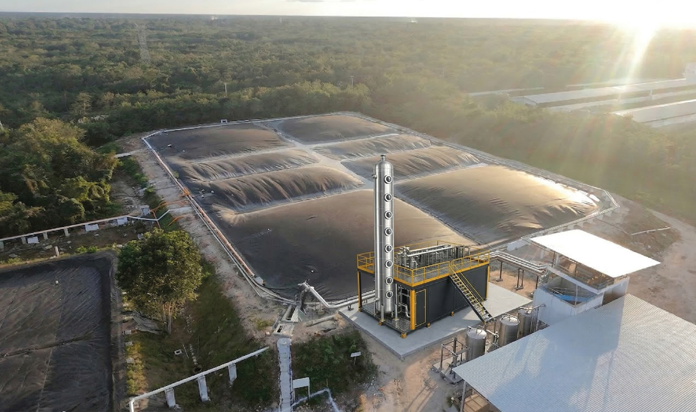

Una torre de contacto líquido-gas, un solvente químico a base de aminas que captura selectivamente CO₂ y H₂S, y un sistema de regeneración térmica que devuelve el solvente al proceso. La química trabaja en bucle; el metano sale puro — típicamente CH₄ ≥ 97 %.

A diferencia de PSA o membranas, la absorción química usa la afinidad del solvente por los gases ácidos (CO₂, H₂S) para separarlos del CH₄. La selectividad es alta y poco dependiente de la presión.
El biogás asciende por la torre; el aminas desciende. La superficie de contacto está dimensionada para máxima transferencia de masa.
El solvente reacciona reversiblemente con CO₂ y H₂S. El CH₄ no reacciona y sale por la cabeza de la torre.
El solvente cargado pasa a un regenerador donde, por calor, libera las impurezas y vuelve al estado original.
El solvente regenerado regresa a la torre. El consumo de químicos es bajo: lo que se repone es la pérdida marginal, no el inventario.
El solvente se reutiliza; sólo se reponen pérdidas marginales.
Régimen continuo con alta tolerancia a variaciones de entrada.
CH₄ típico ≥ 90 % con CO₂ y H₂S residuales acotados.
No todos los proyectos justifican upgrading. Te ayudamos a decidir.